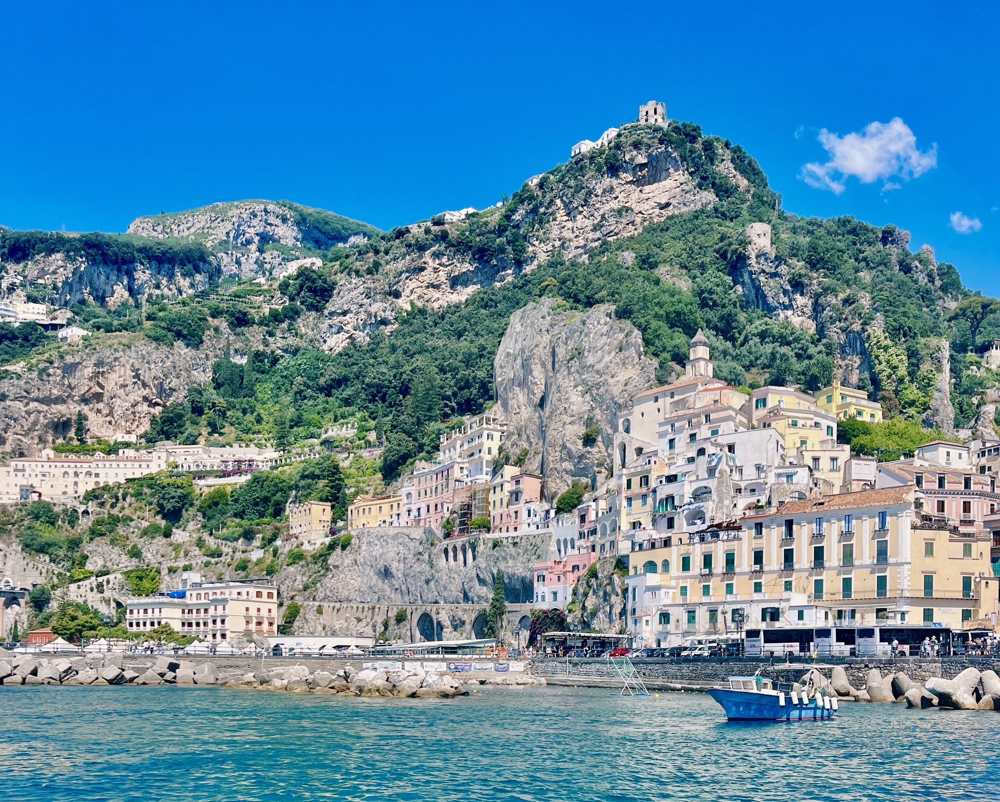

City Guide of The Amalfi Coast
The Amalfi coast is a 34 mile long in Campania that reside along the Mediterranean coast of Italy. This coastal area consists of numerous cities such as Positano, Salerno, Sorrento, and Amalfi. The coast is one of the UNESCO heritage cities for its undisputed beauty. And unique natural landscape. . The mountains and cliffs of the region are covered in historic churches and villas that overlook the crystalline Mediterranean water. The numerous beauties of the Amalfi coast make it one of the most visited vacation spots in the world.
Location and Terrain
The coastal region is just a 30-minute car, train, or bus ride south of Naples. This coastline that stretches along the southern side of Italy’s Sorrentine Peninsula is dazzled with grottos, cliffs, crystal blue bays, and countless islands. The mountain terrain causes the coastal cities implement unique architecture styles creating their own special charm. The southern location blesses this land with a favorable warm climate year-round.
Tourism
The coast attracts tourist year-round with its natural beauty, deep history, and colorful culture. With its mountain’s terrain, tourists frequently visit numerous grottos along the coastline of mainland and island via boat. Additionally, tourists use these boats to easily travel to other islands or cities in the coast. If one wants to experience the water from the land, they can take an elevator down to the coasts numerous beach clubs and indulge in food, drinks, sunbathing, and swimming. The region is also famous for its cuisine. The cuisine in this region famously combines the freshest seafood with mastered Italian recipes to create some of the best meals you can have in Italy. With the coast’s climate, their most famous product are lemons. For years the people of the coast have mastered using these lemons to create some of the best limoncello in the world.
Staying on the Coast
Many tourists will travel to Naples and then take a short taxi, boat, or train to the coastal region. There are numerous villas and hotels scattered through each city of the coast. Which city you choose is personal preference. Travel within a city can be done mostly by walking. To travel to other cities, the easiest way is by boat or train. Driving can be difficult due to the mountain’s windy roads between cities. It is important to time out your trip to this area. The best time to come is late spring/ early summer or early fall. It is best to avoid July and August.